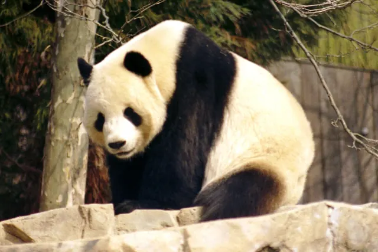

How do giant pandas communicate?
Giant pandas talk mainly through smell and sound. Because adults live mostly alone in thick bamboo forest, they leave scent marks that other pandas can read days later, sometimes rubbing them high on a tree while balanced in a handstand. When pandas do meet, their calls, especially the bleat, carry clues about who is calling.

Why a solitary animal needs to communicate
An adult giant panda spends most of its time alone, eating bamboo for many hours a day. Yet pandas still need to know who lives nearby, avoid unwanted fights and, once a year, find a mate during a very short breeding window. A female is only fertile for a few days each year, so timing matters a great deal. That is a lot of information to share for an animal that rarely sees its neighbours, and scent is the perfect tool because it stays behind after the panda has moved on.
Scent marks: messages left on trees
Giant pandas have a scent gland under the tail, around the anal and genital area. Smithsonian's National Zoo explains that pandas rub this gland on trees, rocks and the ground, and they also mark with urine. Other pandas sniff these marks carefully, and sometimes add marks of their own.
A scent mark is not just a general panda smell. In a study published in Animal Behaviour in 1999, Ronald Swaisgood, Donald Lindburg and Zhou Xiaoping tested whether giant pandas could tell the scents of different individuals apart. They could. That means a mark can work like a signature, telling the next visitor which particular panda passed by, not only that a panda was there.
The handstand: why height matters
One of the most famous panda behaviours is the handstand. A male backs up against a tree, walks his hind legs up the trunk and balances on his front paws, which lets him rub scent much higher than he could while standing normally. Pandas also mark from a squat, a leg cock or a normal standing position.
Angela White, Ronald Swaisgood and Zhang Hemin looked at why height might matter, publishing in Behavioral Ecology and Sociobiology in 2002. Their experiments showed that giant pandas respond differently to scent placed at different heights. A plausible reading is that a high mark tells rivals something about the size of the panda that left it, since a bigger animal can reach higher. In a species that avoids fighting where it can, advertising your size without ever meeting your rival is a clever shortcut.
Bleats, chirps and other calls
Giant pandas are fairly quiet most of the year, but they become much more vocal around the breeding season. They make several kinds of sounds, and one of the best studied is the bleat, a call that sounds a little like a goat or sheep.
Benjamin Charlton, Zhang Zhihe and Rebecca Snyder analysed recordings of giant panda bleats and reported in Animal Behaviour in 2009 that the acoustic structure of a bleat carries cues to the caller's sex, age and body size. A follow up study led by Charlton in Biology Letters went further. Comparing male bleats with hormone measurements from droppings, the team found significant links between features of the calls and each male's androgen levels. The authors describe this as the first demonstration that the structure of a non human mammal call has the potential to reveal the caller's current androgen levels.
What this means for conservation
Understanding panda communication is practical, not just interesting. Research like this helps keepers read the signals pandas give as the breeding season approaches, which matters because of the narrow breeding window explained in our article on giant panda pregnancy. In the wild, protecting connected forest means pandas can keep finding each other's marks along their travel routes. You can read more on our panda behaviour page and the giant panda guide.
Key takeaways
- Giant pandas communicate mainly through scent marks and calls, because adults live mostly alone.
- Pandas can tell individual pandas apart by scent (Swaisgood, Lindburg and Zhou 1999).
- Males sometimes mark in a handstand, and pandas respond differently to scent at different heights (White, Swaisgood and Zhang 2002).
- Bleats carry cues to sex, age and size (Charlton, Zhang and Snyder 2009), and male bleats are linked to androgen levels (Charlton and colleagues 2011).
Frequently asked questions
How do giant pandas communicate with each other?
Mostly through scent and sound. Giant pandas live largely alone in dense bamboo forest, so they leave scent marks on trees, rocks and the ground for other pandas to find later, and they use calls such as bleats when they meet, especially in the breeding season.
Why do giant pandas do handstands?
Male giant pandas sometimes back up to a tree and lift themselves onto their front paws so they can rub scent high on the trunk. Research by White, Swaisgood and Zhang (2002) found that pandas respond differently to scent placed at different heights, which suggests a high mark carries extra meaning for other pandas.
Can giant pandas recognise each other by smell?
Yes. Experiments by Swaisgood, Lindburg and Zhou (1999) showed that giant pandas can tell apart the scents of different individual pandas, so a scent mark can work like a signature.
What sounds do giant pandas make?
Giant pandas make a range of sounds, and the bleat is one of the best studied. Charlton and colleagues found that bleats carry cues to a panda's sex, age and body size (2009), and that features of male bleats are linked to the caller's androgen hormone levels (2011).
Are giant pandas social animals?
Not in the way wolves or monkeys are. Adults spend most of their lives alone and meet mainly to mate, which is exactly why long lasting scent messages are so useful to them.
Sources
- Swaisgood, R. R., Lindburg, D. G. and Zhou, X. (1999), Giant pandas discriminate individual differences in conspecific scent, Animal Behaviour 57: 1045 to 1053. DOI 10.1006/anbe.1998.1070
- White, A. M., Swaisgood, R. R. and Zhang, H. (2002), The highs and lows of chemical communication in giant pandas (Ailuropoda melanoleuca): effect of scent deposition height on signal discrimination, Behavioral Ecology and Sociobiology 51: 519 to 529. DOI 10.1007/s00265-002-0473-3
- Charlton, B. D., Zhang, Z. and Snyder, R. J. (2009), The information content of giant panda, Ailuropoda melanoleuca, bleats: acoustic cues to sex, age and size, Animal Behaviour 78: 893 to 898. DOI 10.1016/j.anbehav.2009.06.029
- Charlton, B. D., Keating, J. L., Kersey, D., Rengui, L. et al. (2011), Vocal cues to male androgen levels in giant pandas, Biology Letters 7(1): 71 to 74. DOI 10.1098/rsbl.2010.0582
- Smithsonian's National Zoo and Conservation Biology Institute: Giant panda
Cite this page
APA
PandasWise. (2026, October 20). How do giant pandas communicate? https://pandaswise.com/blog/how-do-giant-pandas-communicate.html
MLA
"How do giant pandas communicate?" PandasWise, 20 Oct. 2026, https://pandaswise.com/blog/how-do-giant-pandas-communicate.html.
Chicago
PandasWise. "How do giant pandas communicate?" PandasWise. October 20, 2026. https://pandaswise.com/blog/how-do-giant-pandas-communicate.html.